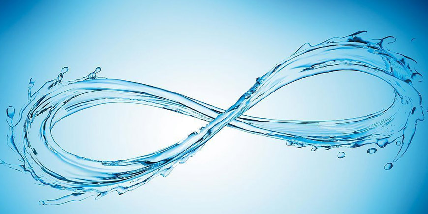

地球上的水资源，从广义来说是指水圈内水量的总体。包括经人类控制并直接可供灌溉、发电、给水、航运、养殖等用途的地表水和地下水，以及江河、湖泊、井、泉、潮汐、港湾和养殖水域等。从狭义上来说是指逐年可以恢复和更新的淡水量。水资源是发展国民经济不可缺少的重要自然资源。在世界许多地方，对水的需求已经超过水资源所能负荷的程度，同时有许多地区也濒临水资源利用之不平衡，所以我们要珍惜水资源。
纯水可以导电，但十分微弱（导电性在日常生活中可以忽略），属于极弱的电解质。日常生活中的水由于溶解了其他电解质而有较多的正负离子，导电性增强。
"渗透"在海水淡化、脱盐、水处理领域，啰嗦、复杂一下又称正渗透、或正向渗透，以示与反渗透、反向渗透法、逆渗透的差异、区别或对应、强调，正向渗透法是与反渗透互逆的一对方法。正渗透作为一种潜在的水纯化和淡化新技术，世界上正对其进行着多角度、深层次的理论研究和实践探索。
随着科技的飞速发展，压力驱动反渗透膜分离技术（RO）在膜、膜组器、设备和工艺等方面都有了较大创新和改进，但人们也越来越意识到RO技术在节能、环保领域存在的局限，而且就脱盐来讲，RO技术可认为已接近发展的顶峰。因此，国外已经开展了"正向渗透膜分离技术（FO）"的相关研究，并取得了一定的成果，在海水淡化、污水处理、食品加工、医药等领域得到了应用，特别是"压力延缓渗透（FRO）海水发电"，更是一项极具前景的清洁再生能源开发技术。但是国内对正向渗透膜分离技术关注得很少，相关研究和论文也不多。虽然，上个世纪90年代我国有了创造性的发明"非加压吸附渗透法海水淡化"（CN92110710。2）。
